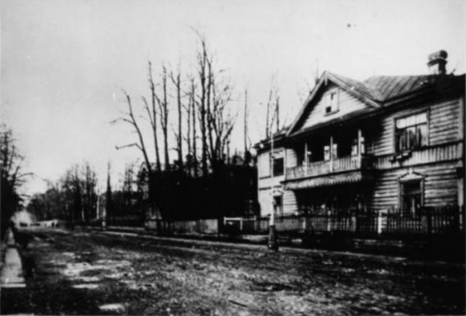

про музей

история дома

Дом 10 по Песочной улице
(ныне — улица Профессора Попова) был построен в середине
XIX века для купца Балашова. В 1891 году его
купил уже у купца Алонкина журналист
В. О. Михневич. В 1894 году дом был
перестроен.
В те годы, когда дом принадлежал
В. О. Михневичу, был достроен второй этаж
по проекту архитектора Е. П. Вейнберга. В 1904
году Михневич завещал свой дом Обществу для
пособия нуждающимся литераторам и учёным
(Литературному фонду)